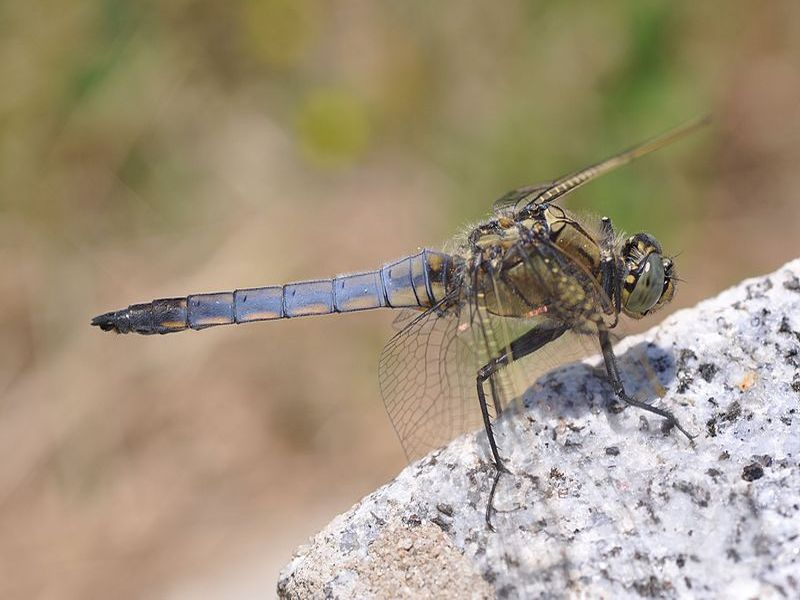

Großer Blaupfeil
Orthetrum cancellatum
Die ausgefärbten Männchen ähneln denen des Plattbauches, sind im Habitus jedoch viel schlanker. Blaupfeile bewegen sich oft weit entfemt von Gewässem und ruhen gerne auf beschotterten Wegen. Ihre Flugzeit dauert von Mai bis September.